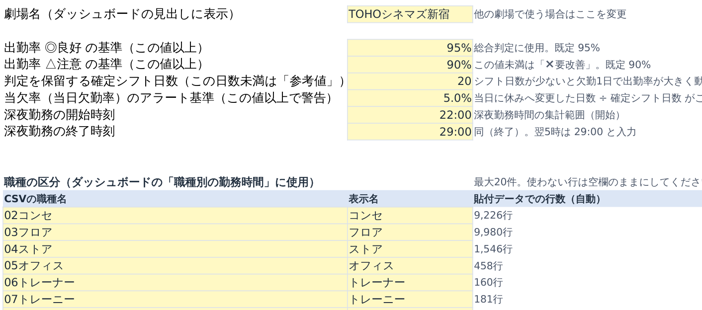
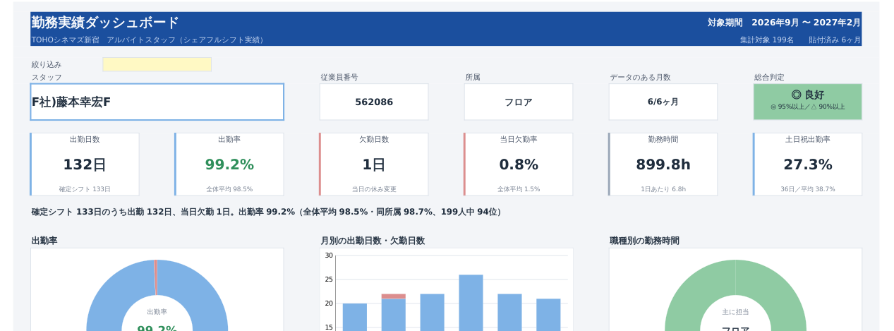

「勤務実績ダッシュボード_◯◯.xlsx」のように劇場名を付けて保存し、「設定」B1（黄色セル）に劇場名を入力します。ダッシュボードの見出しに出ます。
変更してよいのは黄色セルと CSV_1〜6 だけ。非表示の計算用シートは表示・編集しないでください。ダッシュボードは誤操作防止のため保護しています（パスワードなし）。
総合判定は出勤率だけで決まります。既定は ◎良好＝95%以上／△注意＝90%以上／✕要改善＝90%未満、確定シフト日数が20日未満の人は判定を出さず「参考値」です。当欠率のアラート＝B6（既定 5%）。これ以上のスタッフに赤い警告行と赤い塗りが出ます。
試験運用中はエリアで同じ基準に統一してください。途中で変えると劇場間・期間間の比較ができなくなります。
ダッシュボードはA4縦1枚、全体サマリーはA4横1枚、スタッフ一覧は名前がある行まで印刷されます。Ctrl+P で白紙ページが出ないことを一度確認。PDFは ファイル → エクスポート → PDF/XPS。


| 表示 | 意味 | 対処 |
|---|---|---|
| 2026年8月 OK | 正常。月も想定どおり | そのまま進んでOK |
| 未貼付 | そのシートにデータが無い | まだ貼っていなければ問題なし |
| ※ 列名が見つかりません | 1行目のヘッダーが無い／違う | A1からヘッダーごと貼り直す |
| ※ 6,000行を超えています | 1ヶ月の行数が上限超え | 超過分は集計されません。ご連絡を |
| ※ 対象月以外の日付の行が ○行あります | 前のデータが残っている | 全選択→Delete してから貼り直す |
| ※ 読み取れない値があります | 日付や従業員番号が読めない | Excelで開き直して貼り直す |
| ※ CSV_1→CSV_6 が古い月から順に… | 月の順番が逆 | 古い月から順に貼り直す |
| ※ スタッフが半年で400名を超えています | 人数が上限超え | 超えた分は集計されません。ご連絡を |
| 見出し右上に「※ 貼付データに問題があります」 | 上のどれかが出ている | 「使い方」の貼付状況を確認 |
| 場所と表示 | 意味 | どうするか |
|---|---|---|
| 赤い「⚠ 当日欠勤率 ○% が基準に達しています」 | 当欠率が設定B6（既定5%）以上 | 面談で当日欠勤の状況を確認 |
| 総合判定が「参考値」 | 確定シフトが20日未満 | 異常ではない。出勤率は参考に見る |
| 「—」「－」「該当なし」 | データが無い・0日 | 対応不要（0日とは区別しています） |
| 絞り込み欄の右「一致するスタッフはいません」 | その文字を含む名前・番号が無い | 文字を短くするか空欄に戻す |
| タイミング欄の下に赤い「※ シフト日より後に…」 | 後から編集された休み行がある | その日の実態を確認（欠勤に含めず） |
| スタッフ欄に「まずCSVを貼り付けてください」 | データが無い | SETUP 5 へ |
| 場所と表示 | 意味 | どうするか |
|---|---|---|
| 設定C列に「※ 貼付データに無い値です」 | CSVの値と表記が違う | CSVの値をコピーして入れ直す |
| 設定の下に「※ △注意の基準（B4）は…」 | B4 が B3 以上 | B4 を B3 より小さくする |
| 祝日・繁忙日の登録状況に「※」 | その年の祝日が無い など | 表示の指示どおりに直す |